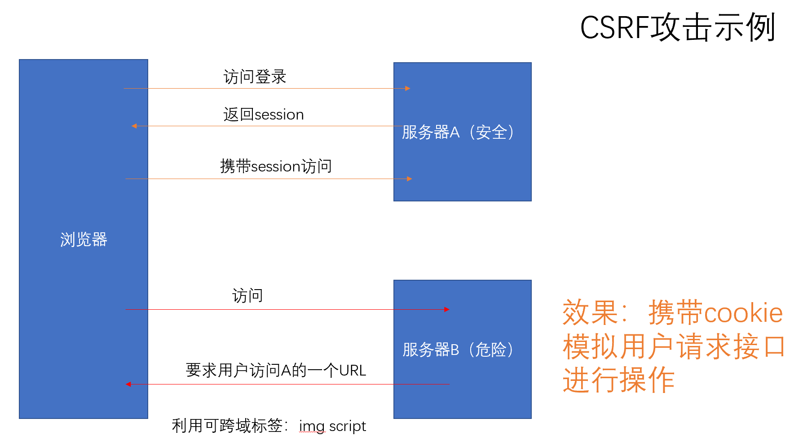
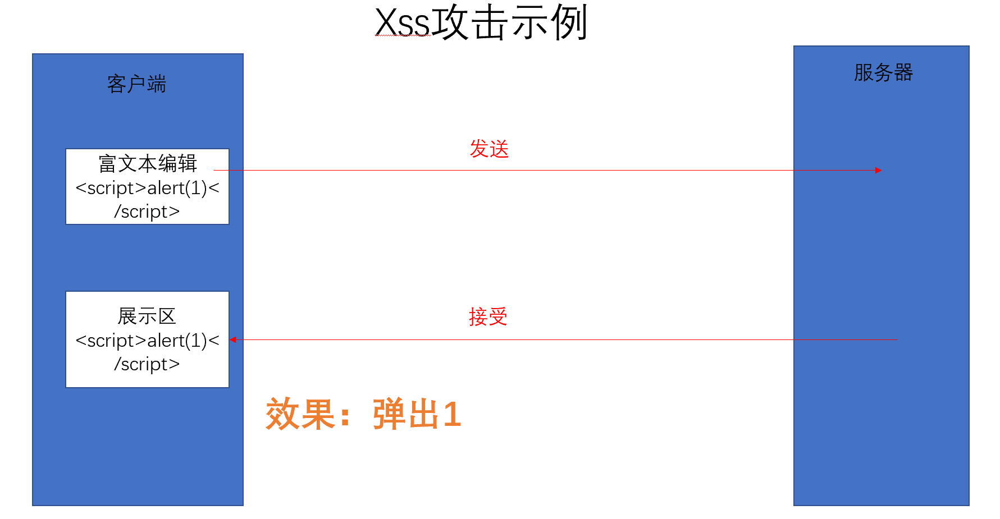

1. CSRF攻击
1.1 什么是CSRF攻击？
CSRF全称为跨站请求伪造（Cross-site request forgery）
攻击者盗用了你的身份信息，以你的名义发送恶意请求，
对服务器来说这个请求是你发起的，却完成了攻击者所期望的一个操作
1.2 危害
修改用户信息，修改密码，以你的名义发送邮件、发消息、盗取你的账号等
1.3 攻击条件
用户已登录存在CSRF漏洞的网站
用户需要被诱导打开攻击者构造的恶意网站
1.4 防范
1.4.1 验证HTTP Referer字段
referer字段表明了请求来源，通过在服务器端添加对请求头字段的验证拒绝一切跨站请求，
但是请求头可以绕过，XHR对象通过setRequestHeader方法可以伪造请求头
1.4.2 添加token验证
客户端令牌token通常作为一种身份标识，由服务器端生成的一串字符串，当第一次登录后，
服务器生成一个token返回给客户端，以后客户端只需带上token来请求数据即可，无需再次带上用户名和密码。
如果来自浏览器请求中的token值与服务器发送给用户的token不匹配，或者请求中token不存在，
则拒绝该请求，使用token验证可以有效防止CSRF攻击，但增加了后端数据处理的工作量
1.4.3 验证码
发送请求前需要输入基于服务端判断的验证码，机制与token类似，
验证码强制用户与web完成交互后才能实现正常请求，最简洁而有效的方法，但影响用户体验
2. XSS攻击
2.1 什么是xss攻击
XSS又叫CSS（Cross Site Script），跨站脚本攻击：攻击者在目标网站植入恶意脚本（js / html），用户在浏览器上运行时可以获取用户敏感信息（cookie / session）、修改web页面以欺骗用户、与其他漏洞相结合形成蠕虫等。
对特殊字符进行转译就好了（vue/react等主流框架已经避免类似问题，vue举例：不能在template中写script标签，无法在js中通过ref或append等方式动态改变或添加script标签）
2.2 危害
- 使网页无法正常运行
- 获取cookie信息
- 劫持流量恶意跳转
2.3 攻击条件
- 网页内部有输入框，内容可存储在服务器上
2.4 防御措施（对用户输入内容和服务端返回内容进行过滤和转译）
- 现代大部分浏览器都自带 XSS 筛选器，vue / react 等成熟框架也对 XSS 进行一些防护
- 过滤，对诸如